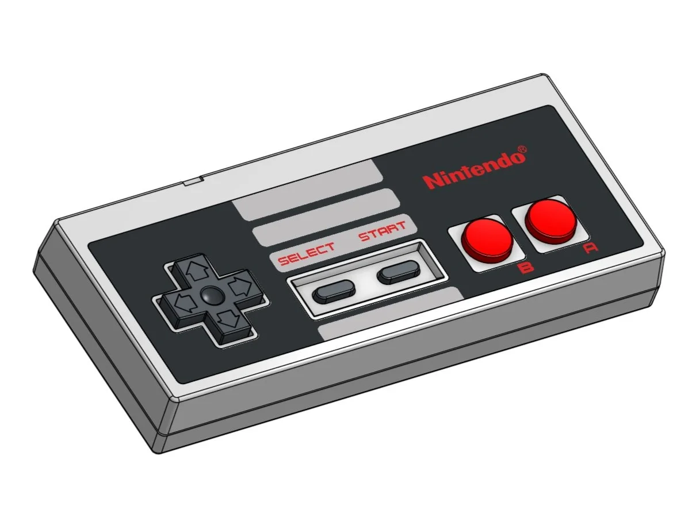
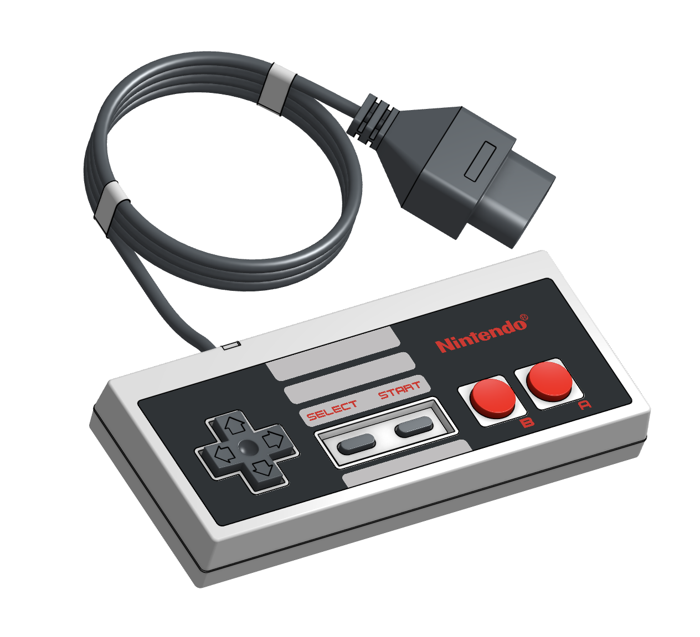

Nintendo D-pad controller
Cross-shaped directional pad replacing joysticks on consoles.

Overview
The Nintendo D-pad controller, launched with the Nintendo Entertainment System in 1985, introduced a novel cross-shaped directional pad that redefined how players interacted with console games. Prior to the NES, home video game systems typically relied on large joysticks or paddle controllers that required wrist and arm movements. The D-pad, a compact, thumb-operated interface, provided silent, precise eight-directional control and required far less physical effort. Its design built on the cross-shaped pad first seen on the Game & Watch Donkey Kong handheld in 1982, itself an invention of Nintendo engineer Gunpei Yokoi, who sought a low-profile solution for portable play.
The NES controller paired the D-pad with two main action buttons (A and B) and Start/Select buttons, housed in a simple rectangular plastic shell that could be held comfortably in two hands. This layout became the archetype for home console gamepads for over a decade. The D-pad’s internal mechanism—four rubber-dome switches arranged around a central pivot—allowed users to rock the pad in any cardinal direction and, by pressing two adjacent directions simultaneously, achieve diagonal movement, while the pivot physically prevented all four switches from being pressed at the same time. This tactile feedback and ease of use proved ideally suited to the era’s precision platformer games, such as Super Mario Bros., cementing the controller’s reputation as an exceptionally responsive and ergonomic input device.
Today, the NES D-pad’s influence extends far beyond gaming: its cross-shaped layout appears on remote controls, mobile phones, calculators, and countless other electronic devices as the universal symbol for directional input. Although analog sticks have since become the primary directional control for 3D games, the D-pad remains an essential secondary input on nearly every modern gamepad, a testament to the enduring utility of Yokoi’s compact, thumb-driven design.
Deep dive
The concept of a cross-shaped thumb pad was born in 1982 when Gunpei Yokoi, head of Nintendo’s R&D1 division, designed the Game & Watch version of Donkey Kong. The handheld’s small form factor precluded a joystick, so Yokoi created a flat, cross-shaped rocker that could be operated with the thumb alone. This “cross key” design was so successful that it was carried over to the controller for the Family Computer (Famicom), launched in Japan in 1983. The North American release of the NES in 1985 used the same controller (model NES-004E), with only minor cosmetic changes such as the addition of grey plastic and redesigned labels. The controller’s design was a collaborative effort within Nintendo’s hardware teams, with Masayuki Uemura overseeing the Famicom’s development and ensuring the D-pad controller met the demands of home console gameplay.
The NES-004E measures approximately 124 mm × 54 mm × 22 mm and is constructed from injection-molded ABS plastic. The D-pad unit itself is a cross-shaped piece mounted on a central pivot, resting on a metal plate inside the shell. Beneath each of its four arms, a rubber dome with a conductive carbon pad sits above a set of interleaved contacts on the printed circuit board. Pressing an arm collapses the dome, bridging the contacts and registering a directional input. The pivot prevents simultaneous activation of opposing directions, while pressing a corner engages two domes, producing a diagonal. The controller houses a single 4021B shift register IC, which reads the state of all eight buttons (four directions, A, B, Select, Start) and sends the data serially through a 7-pin connector. The original controller is tethered by a fixed 7.6-foot (2.3‑m) cable. The D-pad’s surface has a subtle linear texture for grip.
The D-pad transforms thumb motion into binary on/off signals, offering tactile feedback through the rubber domes’ snap and the pivot’s rocking feel. Players quickly learn to locate the pad by feel, using the cross shape as a home position for the thumb. The pad’s low profile reduces fatigue compared to joysticks, enabling rapid directional changes essential for fast-paced platform games. In Super Mario Bros., for instance, the D-pad’s reliability allowed precise control over running, jumping, and ducking without accidental diagonals. The A and B buttons are placed slightly to the right, allowing the index or middle finger to stabilize the back of the controller while the thumb alternates between D-pad and face buttons. This ergonomic arrangement became the standard for subsequent gamepads and influenced the layout of countless handheld devices.
Bundled with every NES console (which sold over 61 million units worldwide), the controller achieved widespread adoption and spawned numerous third-party clones and variations. Its design language persisted in Nintendo’s SNES controller (with additional shoulder buttons), the Game Boy (which integrated a D-pad as a primary input), and later consoles. Rival companies, from Sega to Sony, adopted the D-pad in their own gamepads, often paying license fees to Nintendo in the early years. Even as analog sticks took over primary movement in 3D titles from the mid-1990s, the D-pad never disappeared; it remains a standard feature on Xbox, PlayStation, and Nintendo Switch controllers, used for menu navigation, 2D games, and secondary commands.
The NES D-pad established a new interaction paradigm for consumer electronics, proving that a thumb-operated, discrete-input pad could replace bulkier joysticks. Its compactness enabled the development of genuinely portable game systems, from the Game Boy to modern mobile phones. The cross-shaped directional controller became an icon of digital control, informing the design of TV remotes, PDAs, MP3 players, and automotive interfaces. In human-computer interaction research, the D-pad is often cited as a case study in minimalist, intuitive input design that balances simplicity, durability, and precision. Over three decades later, the NES controller’s D-pad continues to be referenced as the benchmark for directional pad design, and its influence can be traced in all modern button-based directional controls.
Team & pioneers
- Gunpei Yokoi. Lead designer at Nintendo R&D1; inventor of the cross-shaped D-pad for Game & Watch and the NES controller adaptation.
- Masayuki Uemura. Head of Nintendo R&D2; supervised the Famicom/NES hardware and integration of the D-pad controller.
- Nintendo Co., Ltd.. Overall development and manufacture of the NES-004E controller.
Media


Sources
- Product Development Lessons from the NES Controller — The BYU Design Review
- Controller (NES-004E) – Famicom / NES | Chromagi
- Controller pad, NES video game, Nintendo Company Ltd., 1986 | Science Museum Group Collection
- The history of the NES’s iconic controller — XDA
- Nintendo Entertainment System Controller - NintendoWiki
- D-pad - Wikipedia
- Why The NES Controller Became The Standard — Oldiesnest